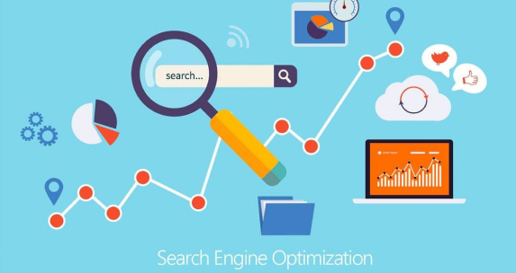
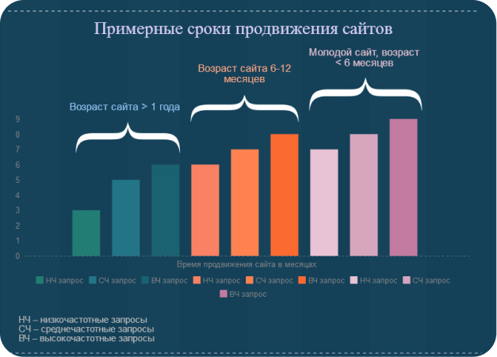

Что такое SEO-продвижение
SEO (Search Engine Optimization) – это технология раскрутки сайта в поисковой выдаче с целью получения трафика. В основе работы лежит знание алгоритмов ранжирования ресурсов в выдаче и улучшение критериев сайта с целью выведения его в топ результатов поиска по требуемым ключевым фразам.
Проще говоря, в результате проведения качественного SEO сайт поднимается в выдаче поисковика, а значит, по ссылке на продвигаемую страницу идёт трафик посетителей, который будет тем больше, чем выше позиция такой ссылки. Поэтому, отвечая на вопрос о том, что такое SEO-оптимизация, можно сказать, что это комплекс мероприятий для поднятия позиций сайта в поисковых системах.
Что предполагает продвижение ресурса
SEO-оптимизация предполагает выполнение целого ряда действий, направленных на завоевание авторитета у целевой аудитории поисковой системы.
Критерий
Определение критериев, которые максимально влияют на ранжирование сайта в выдаче, и целенаправленная работа с параметрами ресурса, которые их улучшают.
Структура
Формирование релевантного тематического ядра, группировка слов по тематике и перераспределение структуры сайта.
Юзабилити
Проработка юзабилити сайта и поведенческого фактора, который играет все большую роль при оценке качества ресурса поисковыми системами.
Оптимизация
Внутренняя и внешняя поисковая оптимизация ресурса.
Статистика
Постоянный сбор и анализ статистики переходов посетителей на сайт из поисковой системы и их действий непосредственно на ресурсе.
Стратегия
Корректировка стратегии продвижения на основе данных анализа собранной статистики и ее динамики.
От чего зависят сроки SEO-продвижения
SEO-оптимизация и вывод на требуемые позиции в выдаче — процесс, значительно растянутый во времени. Эффект от проведения работ начинает появляться примерно через 2–3 месяца после их начала, а ощутимые результаты будут заметны через полгода-год.
Впрочем, возможны и более быстрые результаты. На скорость и успех оптимизации влияет ряд факторов, среди которых:
- Возраст домена и его существующая оценка в поисковых системах;
- Уровень конкуренции в тематике деятельности компании;
- Качество реализации проекта как в техническом, так и в информационном плане;
- Поведенческие факторы;
- Качественная оптимизация и грамотное составление семантического ядра;
- Регулярный анализ результатов для корректировки стратегии продвижения.
Критерии успешности продвижения
Поскольку услуга эта достаточно дорогая, то и заказчик, и исполнитель должны иметь возможность оценить эффективность проводимых действий. Проще и нагляднее всего это можно сделать по двум критериям:
- Динамика позиций сайта по одному и тому же запросу,
- Динамика изменений трафика от поисковой системы.
Часто для оценки эффективности используют синтетические показатели, которые учитывают несколько факторов. Например, трафик может измениться в связи с сезонным спросом, а недобросовестный оптимизатор может выдать это явление за свои заслуги. Точно так же поднятие запроса в выдаче может не привести к увеличению трафика, поэтому придется искать и продвигать другой, более эффективный запрос.
Именно поэтому сегодня можно встретить различные тарифы услуг на раскрутку сайтов, которые предполагают, например, оплату за удержание позиций или за объем минимального трафика на ресурс, то есть в основу оценки результата ставятся показатели, которые легко может проверить заказчик.
Стоимость поискового продвижения
В целом на стоимость SEO-продвижения влияют:
- Конкуренция в сфере вашей деятельности, наличие хорошо раскрученных сайтов у конкурентов;
- Текущее состояние вашего проекта, его возраст, наличие санкций от поисковых систем;
- Необходимость модернизации сайта;
- География оказания ваших услуг или продажи товаров.
Сразу стоит отметить, что общая стоимость работ по SEO обычно достаточно велика, как и отдача. Но в итоге вы получаете самый дешевый канал трафика в пересчете на одного посетителя при условии поручения решения задачи опытным профессионалам.
Кроме того, результаты, достигнутые благодаря SEO-продвижению, сохраняются достаточно долго, даже если вы полностью прекращаете работу в этом направлении. Существует не так много типов проектов, для которых использование SEO-продвижения может быть экономически невыгодным, однако добросовестный оптимизатор вам об этом обязательно сообщит после анализа задачи и предложит другие каналы получения клиентов для вашего бизнеса.
Инструменты "сеошника"
При настоящих условиях конкуренции и сложности рынка в продвижении никак не обойтись без использования программ и сервисов-помощников. Самыми популярными являются:
- KeyCollector – платная программа для создания семантического ядра.
- Screaming Frog SEO Spider – платная десктопная программа для сканирования.
- Advego Plagiatus – бесплатный сервис проверки уникальности текста.
- Semrush.com – платный сервис для исследования конкурентов.
- Checktrust.ru – сервис проверки траста сайта и оценки качества ссылочной массы.
- Linkpad.ru – сервис анализа ссылок конкурентов.
- Xtool.ru – сервис проверки траста сайтов и страниц в Яндексе, анализ многочисленных seo-параметров.
- Builtwith.com – сервис показывает основные технические характеристики интернет-ресурса.